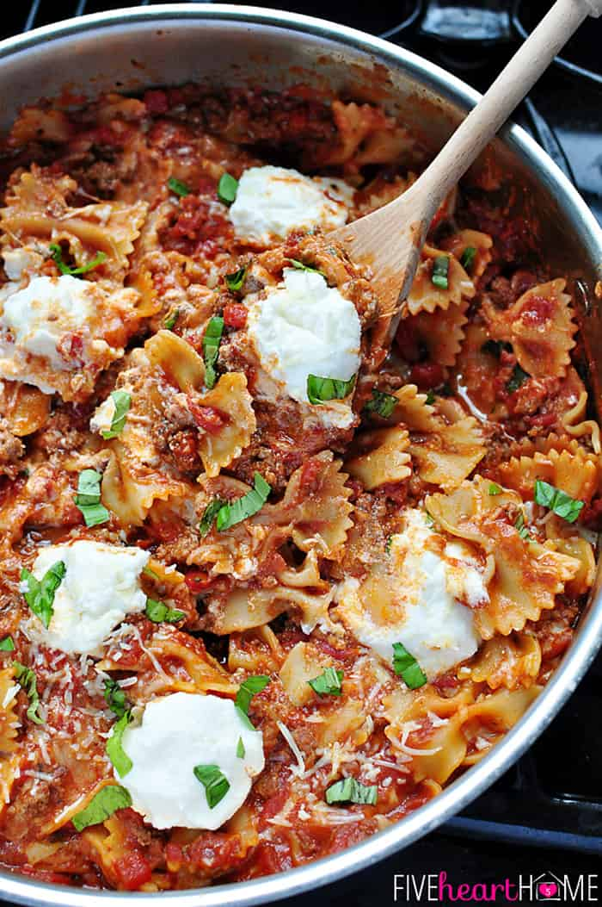

Skillet Lasagna

Quick alternative to the traditional lasagna
This meal checks many boxes for me. It is simple, fast, and makes great leftovers!
It feels like the comfort food of a full lasagna, but requires a little less time and effort.
Ingredients
- 1 (28-ounce) can petite diced tomatoes
- ~1/2 cup water
- 1 (8-ounce) can tomato sauce
- 2 tablespoons sugar
- 1 tablespoon extra-virgin olive oil
- 5 cloves garlic, minced
- 1/4 tsp red pepper flakes
- 1 lb ground beef
- Garlic salt and freshly ground black pepper
- 5 Tbsp chopped fresh Italian herbs, such as basil, oregano, thyme, &/or parsley (divided)
- 8 oz bow-tie pasta (farfalle)
- 1 cup shredded mozzarella
- 1/2 cup grated Parmesan cheese, set 2 Tbsp aside
- 1 cup ricotta cheese
Recipe Directions
- Pour can of diced tomatoes (with juices) into a 1-quart liquid measuring cup. Add water until the mixture measures 4 cups. Stir in tomato sauce and sugar; set aside.
- Heat a large skillet over medium heat. Add olive oil; tilt pan to coat. Add garlic and red pepper flakes and stir for 30 seconds, or until fragrant. Add ground beef and cook until done. Drain grease, season meat with garlic salt and pepper, to taste, and stir in 3 tablespoons of fresh chopped herbs.
- Scatter pasta over meat and pour tomato mixture over pasta without stirring. Cover and bring to a simmer. Reduce heat to medium-low and continue to simmer, covered, stirring every 5 minutes. Cook until pasta is tender, for about 20 to 25 minutes.
- Remove skillet from heat and stir in mozzarella and ½ cup Parmesan. Taste and adjust seasonings, adding more garlic salt, pepper, and/or sugar, if necessary. Remove from heat and dollop heaping tablespoons of ricotta all over surface of pasta mixture. Cover and allow to rest for 5 minutes. Sprinkle with remaining fresh herbs and Parmesan.
Return to top
Return to main page